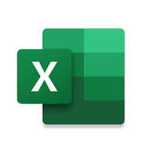
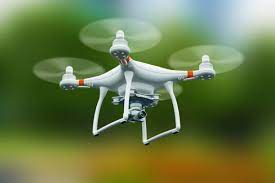
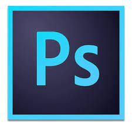

 Excel: O Excel é considerado um software de planilha eletrônica ou de cálculos. Com o Excel se pode fazer desde simples cálculos, até cálculos mais avançados como financeiros, matemáticos, lógicos, estatísticos, etc. Pode-se fazer desde controle de gastos da sua casa, até controle de estoque ou fluxo de caixa de uma empresa.
 Pilotagem de Drones: No curso de formação de pilotos o aluno ganha uma vasta experiência em pilotagem de vários modelos de drones, dos mais básicos aos mais avançados.
Segurança da Informação: Além de criptografia, segurança na internet, arquitetura, segurança em redes de computadores e recuperação de dados, a grade curricular costuma ter também disciplinas de legislação, matemática, administração e marketing.
Informatica Básica: Compreender os componentes e funções básicas de um computador; Aprender como utilizar a Área de Trabalho, navegar, pesquisar, baixar arquivos na Internet; Conhecer os principais programas do Windows e características dos editores de texto e, por fim, Aprender boas práticas para navegação segura na internet.
Corel Draw: Vai do iniciante ao avançado, aprendendo a função de todas as ferramentas, e usá-las em projetos reais para ficar claro toda a funcionalidade de cada ferramenta. Também em nosso curso vamos ensinar a criar ilustrações profissionais, mesmo sem ser um.
 Photoshop: É abordado o conteúdo básico, focando principalmente no conhecimento da ferramenta, workflow de trabalho e tratamento de imagens fotográficas, desde o controle de tamanho da imagem e diagramação até tratamento de cor, trabalho não destrutivo, ajustes finos, retoques, efeitos, recortes e composição no Photoshop.
Introdução a Gastronomia: O profissional de Gastronomia reúne conhecimentos que vão muito além das habilidades técnicas para preparar os alimentos. Durante o estudo, os alunos aprendem sobre gestão, processos industriais, valores nutricionais do alimento, legislação e muito mais.
Design Grafico: No decorrer da graduação, independentemente se é bacharelado ou tecnológico, o estudante de Design Gráfico tem contato com disciplinas teóricas, como História da Arte e Teoria da Comunicação, e disciplinas direcionadas à prática da profissão, como Composição Gráfica, Fotografia e Produção Gráfica.